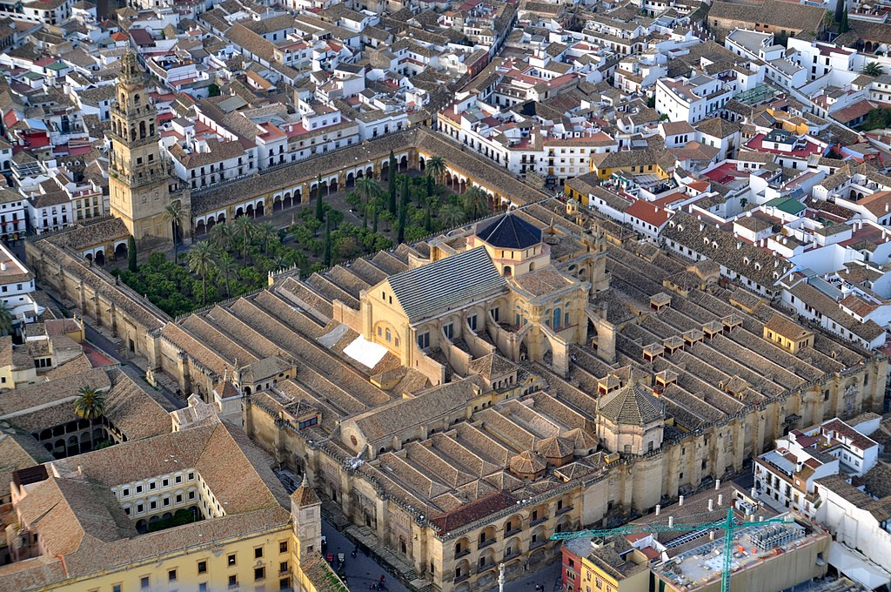
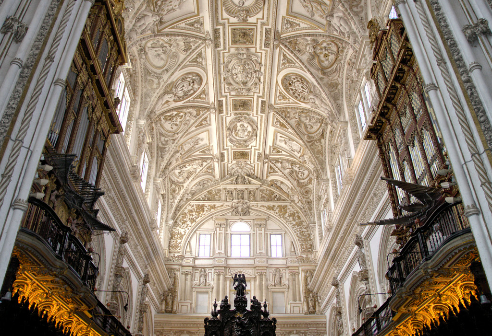
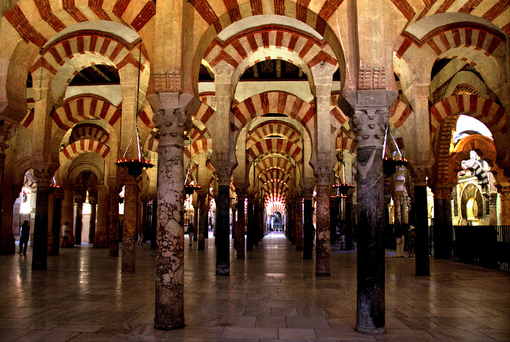
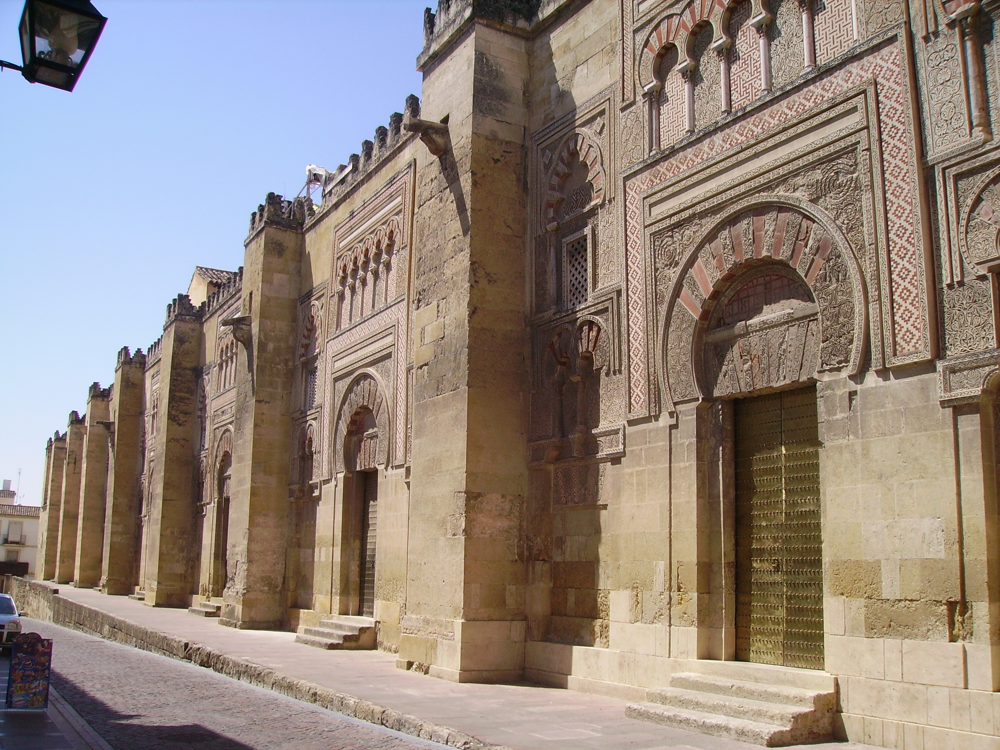
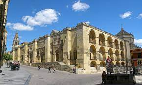

La Mezquita
La mezquita-catedral de Córdoba, Santa María Madre de Dios» o «Gran mezquita de Córdoba»,
actualmente conocida como la Catedral de la Asunción de Nuestra Señora de forma eclesiástica, es un edificio de la ciudad de Córdoba, España.
En 2019 superó los dos millones de visitantes, siendo su récord histórico y convirtiéndolo en uno de los monumentos más visitados de España.

Se empezó a construir como mezquita en el año 784; hasta hace poco se creía que tras la apropiación por los conquistadores musulmanes de
la basílica hispanorromana de San Vicente Mártir y la reutilización de parte de los materiales,
quedando reservada al culto musulmán, pero los estudios arqueológicos más recientes descartan esta hipótesis.
El edificio fue objeto de ampliaciones durante el Emirato de Córdoba y el Califato de Córdoba.
Con 23 400 metros cuadrados, fue la segunda mezquita más grande del mundo en superficie,
por detrás de la Mezquita de La Meca, siendo superada posteriormente por la Mezquita Azul (Estambul, 1588).
El muro de la qibla no fue orientado hacia La Meca, sino 51º grados hacia el sur; esto era habitual en las mezquitas de al-Ándalus.
En 1238, tras la Reconquista cristiana de la ciudad, se llevó a cabo su consagración como catedral de la diócesis con la Ordenación episcopal de su primer obispo,
Lope de Fitero.
El edificio alberga el cabildo catedralicio de la Diócesis de Córdoba, y por su carácter de templo católico y sede episcopal,
está reservado al culto católico.
En 1523, bajo la dirección de los arquitectos Hernán Ruiz, el Viejo y su hijo,
se construyó su basílica cruciforme renacentista de estilo plateresco.
Hoy todo el conjunto constituye el monumento más importante de Córdoba, y también de toda la arquitectura andalusí,
junto con la Alhambra, así como el más emblemático del arte omeya hispanomusulmán.
Declarada como Bien de interés cultural y Patrimonio Cultural de la Humanidad como parte del centro histórico de la ciudad,
se incluyó por el público entre los 12 Tesoros de España en 20078 y fue premiada como el mejor sitio de interés turístico de Europa
y sexto del mundo según un concurso de TripAdvisor.
Según la tradición, en el solar de la actual Mezquita-catedral de Córdoba estuvo originalmente una iglesia cristiana dedicada a
San Vicente Mártir, que fue dividida y compartida entre cristianos y musulmanes tras la conquista islámica de la península ibérica.
Con el aumento de la población islámica, el emir Abderramán I decidió en 785 comprar la estructura al completo y demolerla12 para construir
la nueva mezquita; a cambio, permitió a los cristianos reconstruir otras iglesias en ruinas, incluidas las de los mártires San Fausto,
Januario y Marcial, que gozaban de gran devoción en la época.
La historicidad de estos eventos ha sido discutida,12 debido a que las evidencias arqueológicas son escasas y
no se ha podido comprobar con hechos posteriores a la llegada de Abderramán a la península.
El relato de la iglesia siendo reconvertida en mezquita, que es desarrollado por el historiador del siglo x Al-Razi, alberga muchas
similitudes con la conquista musulmana de Siria, en particular con la construcción de la Mezquita de los Omeyas en Damasco.
Para los historiadores medievales, estos paralelos servían para enaltecer la conquista omeya de la península y la apropiación de la Córdoba
visigoda. Otra fuente del siglo x menciona una iglesia que se levantó en el centro de la mezquita, sin dar muchos más detalles.
Una exposición arqueológica actual en la Mezquita-catedral muestra fragmentos de un edificio tardoantiguo o visigodo excavado por
el arquitecto Félix Hernández en 1930, enfatizando el carácter cristiano del monumento.16175 Según Susana Calvo Padilla,
especialista en la historia de la Mezquita-catedral, aunque se han encontrado los restos de estructuras similares a iglesias,
no existen evidencias arqueológicas suficientes de que se haya encontrado la iglesia de San Vicente. Parece que los restos tendrían
más relación con un complejo episcopal que con una iglesia que fue dividida entre musulmanes y cristianos.
Pedro Marfil, arqueólogo de la Universidad de Córdoba, ha interpretado también los restos encontrados como un complejo episcopal que
quizás albergara una basílica. Sin embargo, esta teoría parece estar equivocada según el arqueólogo Fernando Arce-Sainz,
que declara que ninguno de los restos analizados alberga una iconografía cristiana, ni siquiera de un cementerio,
que apoyara que existiera una iglesia. La historiadora del arte Rose Walker, ha criticado que Pedro Marfil se basa en interpretaciones
personales. A pesar de las dudas del tipo de estructura que se encuentra en el substrato,
es casi seguro que Abderramán destruyó el antiguo edificio para construir la nueva mezquita y que no tuvo relación con la forma anterior.
Mezquita fundacional de Abderramán I
La puerta de San Esteban, la más antigua del edificio, fue construida como puerta occidental de la primera mezquita.
La mezquita fundacional fue construida por Abderramán I, uno de los últimos miembros de la dinastía omeya que había conseguido escapar
de Damasco tras la masacre de su familia durante la Revolución abasí y había derrotado al gobernador abasí Yusuf ibn Abd al-Rahman al-Fihri
en Córdoba, instaurando el nuevo Emirato independiente en el 756.
La construcción de la mezquita comenzó en 785 y terminó en menos de dos años. Este periodo de tiempo tan reducido puede deberse a la
reutilización de piezas (material de acarreo) romanas y visigodas, sobre todo columnas y capiteles. Se desconoce el arquitecto, aunque se
han observado influencias sirias (omeyas), visigodas y romanas en el diseño del edificio. Entre los albañiles probablemente se encontraban
locales y sirios de origen. Según la tradición y algunas fuentes escritas, Abderramán se encargó personalmente del proyecto, aunque se ha
debatido hasta qué punto influyó su persona en el diseño de la mezquita.
La mezquita fundacional albergaba una forma casi cuadrada de 74 x 79 metros cuadrados, dividida entre el patio de abluciones (sahn) al
norte y la sala de oración (haram) al sur. Debido a que fue construida en pendiente, se tuvo que recurrir a una gran cantidad de relleno
para crear el nivel necesario. La innovación arquitectónica más característica, que se ha repetido en edificios islámicos posteriores, ha
sido la utilización de la doble arcada. Se ha especulado que Abderramán lo construyó de este modo porque le recordaba a un bosque de
palmeras de su Siria natal; sin embargo, una motivación más técnica hubiera sido que las columnas reutilizadas no eran lo suficientemente
altas. Para darle estabilidad a este alzado se recurre a dobles arcos, de los cuales el inferior, de herradura, hace funciones de entibo,
mientras que el superior, de medio punto, es el que soporta la cubierta. Este sistema, además de la alternancia cromática y material de las
dovelas, rojas de ladrillo, amarillentas las de caliza, parece estar inspirado en el acueducto romano de Los Milagros (Mérida).
El mihrab original de la mezquita (nicho que indica la dirección del rezo) no se conserva actualmente, aunque es probable que sus restos
fuesen encontrados en las excavaciones entre 1932 y 1936. El artefacto hallado mostraba la parte superior del mihrab con forma de concha,
similar al posterior. La mezquita fundacional tenía cuatro entradas: una estaba en el centro del muro norte en el patio, dos en los muros
oriental y occidental del patio y el cuarto se hallaba en medio del muro occidental dentro de la sala de oración. Esta última fue conocida
como Bab al-Wuzara' (la puerta de los Visires, hoy conocida como puerta de San Esteban) y es probable que fuera la entrada usada por el
emir y los oficiales estatales, que trabajaban en el Alcázar andalusí contiguo. Los muros exteriores se reforzaron con contrafuertes que
pueden verse a día de hoy.
Este primer edificio consta, en cualquier caso, de once naves longitudinales orientadas hacia el río Guadalquivir, cuya anchura es idéntica,
a excepción de la central, que conduce al mihrab y las dos de los extremos. La central ligeramente más ancha que el resto y las laterales
ligeramente más estrechas, aunque estas leves diferencias solo son apreciables en un plano. Estas naves constan de doce intercolumnios que
corren en dirección al muro de la quibla.

Orientación del muro de qibla
Esquina suroeste, exterior del muro de la quibla.Los muros de qibla de las mezquitas teóricamente deben estar orientados
hacia La Meca, sin embargo, la Mezquita de Córdoba está orientada hacia al sur, mientras que La Meca se encuentra al
sureste. Esta orientación, a diferencia de las mezquitas actuales, se debe a las diferencias históricas de opinión
sobre la dirección apropiada del muro de qibla en lugares islámicos más lejanos como al-Ándalus y Marruecos. En este
periodo temprano, muchos musulmanes de la región preferían que la qibla estuviera mirando hacia el sur en lugar de mirar
directamente hacia La Meca. Este hecho se basa en que el profeta Mahoma declaró que «entre el este y el oeste se
encuentra la qibla», lo que legitimó las alineaciones hacia el sur. Esta práctica también emulaba la orientación de
los muros de la Kaaba de la Gran Mezquita de La Meca, basada en otra tradición que consideraba que los muros de la Kaaba
se asociaban con las diversas localizaciones del mundo islámico. Según esta tradición, la cara norte de la Kaaba se
asociaba a al-Ándalus y, por lo tanto, la Gran Mezquita de Córdoba se orientaba al sur como si mirara a la cara norte de
la Kaaba. A pesar de que mezquitas posteriores en al-Ándalus estuvieron orientadas hacia La Meca, por ejemplo, la
mezquita de Medina Azahara del siglo x, las expansiones posteriores de la mezquita cordobesa no modificaron su orientación
original. Otra teoría propuesta por el arqueólogo Pedro Marfil apunta a que las estructuras originales se adaptaron a
los límites urbanísticos de la ciudad tardoantigua.
Hipótesis del templo arriano
Torre campanario que envuelve al alminar
Plano con las diferentes ampliaciones de la Mezquita
En el siglo xx, el escritor Ignacio Olagüe Videla en su célebre y controvertido libro La Revolución islámica en
Occidente (1974), supone que Abderramán I no habría construido esta mezquita y que el templo primitivo ya contaba con
el famoso bosque de columnas. Añade, además, que originalmente habría sido concebido para el culto arriano. Sin embargo
esta postura, recogida en textos de divulgación, es rechazada por la investigación académica por carecer de pruebas y
manipular los textos. Los estudios arqueológicos realizados en el lugar por el arquitecto Félix Hernández demuestran
sin lugar a dudas el origen omeya del edificio, erigido sobre la basílica cristiana de San Vicente.
Intervención de Hisham I
El emir Hisham I terminó los trabajos inacabados tras el fallecimiento de Abderramán I, terminando el patio o
sahn y erigió el primer alminar. Este primitivo alminar, de planta cuadrada, fue más tarde derribado por Abderramán III
quien construyó otro, luego parcialmente desmochado, y cuyos restos se cree que se encuentran actualmente embutidos en
el campanario cristiano de la catedral. La cimentación del alminar de Hisham I fue hallada en el Patio de los Naranjos
por el arqueólogo Félix Hernández en el siglo xx, quién dejó marcada su ubicación en el pavimento y es hoy día visible.

Ampliación de Abderramán II
Según la historiografía clásica, el crecimiento de la ciudad habría determinado la necesidad de un oratorio (haram)
con un aforo mayor para poder albergar más fieles durante la celebración de los viernes, por lo que Abderramán II
decidió la primera ampliación de la mezquita. Las obras comenzaron en 836 (aunque también se citan los años 833 y 848),
acabándose en el 852, bajo mandato ya del hijo de Abderramán II, Muhammad I (r. 852-886). Para llevarla a cabo se
derribó el primitivo muro de la quibla, cuyos restos son actualmente visibles en forma de grandes pilares, y se
prolongaron las arquerías en ocho tramos o crujías más, con una longitud total de 24 metros. Los elementos
arquitectónicos son idénticos a los de la fase inicial: alternancia de dovelas en los arcos (amarillas de caliza y
rojas de ladrillo) y utilización de materiales de acarreo, aunque como novedad se utilizaron algunos materiales
labrados a propósito para esta ampliación, como los ocho capiteles novedosos denominados «de pencas». El mihrab, cuyos
cimientos fueron encontrados en el subsuelo de la capilla de Villaviciosa, estaba concebido monumentalmente con un arco
de entrada sostenido por cuatro columnas y sobresalía al exterior del muro de la qibla. También este emir llevó a cabo
una intervención en el patio, cerrándolo con saqqifas en los laterales que faltaban.
Otras intervenciones posteriores fueron las realizadas por Muhammad I, con la creación de la macsura, la restauración de
la puerta de los Visires, actual puerta de San Esteban; su sucesor Al-Múndir (r. 886-888), quien dispuso un tesoro en la
mezquita; mientras que el emir Abdalá (r. 888-912) construyó el primer sabat, un pasadizo elevado, que conectaba la macsura
de la mezquita con el Alcázar andalusí al otro extremo de la calle.
Intervención de Abderramán III
En 929 Abderramán III instauró el nuevo Califato de Córdoba y consolidó el nuevo poder andalusí en la región. Como parte de
sus variados proyectos constructivos, agrandó el patio de la Gran Mezquita y derribó el primer alminar y erigió uno nuevo
comenzando entre 951-952. El minarete o alminar tenía 47 metros de altura y una base cuadrada de 8,5 metros por lado.
El erudito Jonathan Bloom ha sugerido que la construcción del minarete por Abderramán fue visto como un símbolo de la
creciente autoridad del califa y un intento de rivalizar con el Califato fatimí al este. Abderramán también reforzó el muro
norte del patio añadiendo otra fachada frente a la antigua. Fuentes históricas difieren sobre si el patio estaba
porticado; algunos historiadores modernos afirman que el patio se porticó en esta época y se diseñó alternando pilares y
columnas, tal y como puede verse actualmente. Las nuevas intervenciones, incluyendo el minarete, fueron completadas en 958,
tal y como se evidencia en una placa de mármol que incluye el nombre de Abderramán III como maestro y supervisor de las
obras.
Este alminar se conserva actualmente desmochado y embutido en el campanario cristiano, aunque se conoce su alzado gracias a
los dibujos conservados. El único testimonio gráfico que nos ha llegado es un relieve que se encuentra en una de las enjutas
de la Puerta de Santa Catalina.
Ampliación de Alhakén II
Puertas y cúpulas de la maqsura, construida durante la ampliación de Alhakén II.
Coincidiendo con el esplendor del califato, Alhakén II (r. 961-976), que participó en los proyectos arquitectónicos de su padre,
comenzó durante su reinado en 961 la ampliación más innovadora. Derribó el antiguo mihrab de Abderramán II, del que también quedan
restos visibles en la actualidad, y amplió la sala de oración 45 metros hacia el sur añadiendo doce crujías con el diseño original
de doble arcada. La nave central de la mezquita se ennobleció con la construcción de una cúpula nervada, ahora parte de la
capilla de Villaviciosa. Asimismo, se creó una macsura rectangular y rematada con tres cúpulas nervadas alrededor del nuevo mihrab,
presidida con arcos únicos polilobulados y entrecruzados, y en las columnas se alternan fustes rosas, de jaspe rojo de Cabra, y
azules oscuros de la Sierra Morena cordobesa. Los materiales ya no son de acarreo, sino labrados ex profeso, con presencia de
capiteles de pencas. Las cúpulas y el nuevo mihrab fueron concluidos en 965 y una inscripción muestra los nombres de cuatro
artesanos que también colaboraron en el Salón Rico de Medina Azahara. Poco después de esta fecha, tanto la cúpula central de la
macsura como los muros del mihrab se decoraron con ricos mosaicos dorados bizantinos. Según algunas fuentes tradicionales como Ibn
Idari, Alhakén II escribió al emperador bizantino Nicéforo II de Constantinopla requiriéndole expertos en mosaicos para la tarea.
El emperador aceptó y envió un maestro de obras con alrededor de 1600 kilos de teselas musivarias como presente. Los mosaiquistas
instruyeron a algunos artesanos del propio califa, quienes adquirieron la habilidad para realizar el mismo trabajo, que fue
finalizado a finales de 970 o principios de 971. Otras novedades son el doble muro de la qibla, que facilita la conexión con el
sabat y que permite que el mihrab no se limite a un simple nicho, sino que se abra como una pequeña habitación octogonal cubierta
con una cúpula con forma de concha.

Mihrab
Alhakén II también subvencionó la construcción de un nuevo mimbar (púlpito) en 965, cuyas obras se demoraron cinco o siete años.
Desafortunadamente, los detalles de esta estructura y su cronología se contradicen con las fuentes históricas. Ibn Idari, por
ejemplo, indica que Alhakén tenía dos mimbares en esta época, y quizás uno de ellos fuese destruido o reemplazado. No obstante,
el mimbar que se asoció con la mezquita fue destacado por varios escritores por su gran artesanía. Realizado en maderas
preciosas como el ébano, el boj y maderas «perfumadas», tuvo incrustaciones de marfil y otras maderas coloridas como sándalo
rojo y amarillo. Historiadores modernos creen que el mimbar tenía ruedas que permitían su desplazamiento para entrar y salir de
su sala.
Ampliación de Almanzor
Arcos exteriores del muro este
Dado el gran continuo crecimiento demográfico de Córdoba, el hayib del califa Hisham II, Almanzor, decidió llevar a cabo la tercera
y última de las ampliaciones de la mezquita entre 987-988. Su ampliación fue la más extensa de las acometidas, afectando tanto a
patio como a sala de oración, aunque no se hizo hacia el sur como las anteriores, debido a la cercanía del río Guadalquivir, sino
hacia el este 47,76 metros, añadiendo ocho naves a la mezquita que dejan descentrado el mihrab. Una vez más, se repitió el mismo
diseño de doble arcada en la nueva construcción, aunque la alternancia de dovelas es solo cromática y no de materiales puesto que
todas son de piedra caliza, aunque pintadas de almagra las rojas. Se produjeron cientos de capiteles para las nuevas columnas, sin
embargo, eran más simples y menos ornamentadas debido a la rapidez de su realización. La nueva ampliación de Almanzor albergaba una
superficie de 8.600 metros cuadrados e hizo que la mezquita se convirtiera en la más grande del mundo fuera del Irak abasí. El nuevo
muro oriental del templo se decoró con diez nuevos portales exteriores ricamente decorados y similares a los del muro occidental,
aunque fueron en gran medida restaurados durante el siglo xx. Almanzor también fue célebre por haber sustraído las campanas de la
catedral de Santiago de Compostela y haberlas fundido para realizar lámparas de techo en la mezquita, aunque ninguno parece haber
sobrevivido.
Últimos usos como mezquita (siglos XI-XII)
Tras el colapso del Califato cordobés a comienzos del siglo xi, no se realizaron más ampliaciones en la mezquita. La ausencia de
autoridad tuvo consecuencias negativas en el templo, como el saqueo y daño durante la fitna de al-Ándalus. Córdoba también sufrió
un declive, aunque se mantuvo como un centro cultural relevante. Bajo los almorávides, los talleres artesanales cordobeses fueron
contratados para crear mimbares ricamente decorados para importantes mezquitas de Marruecos, siendo el más celébre el mimbar de Ali
Ibn Yusuf en 1137, que fue inspirado por el mimbar de Alhakén II de la Gran Mezquita.
En 1146 el ejército cristiano de Alfonso VII de León y Castilla ocupó brevemente Córdoba. El arzobispo de Toledo,
Raimundo de Sauvetat, acompañó al monarca y realizó una misa dentro de la mezquita para «consagrar» el edificio.49 Según las fuentes
islámicas, antes de que los cristianos abandonaran la ciudad saquearon la mezquita, llevándose sus lámparas de techo, el yamur de oro
y plata del minarete y partes ricas del mimbar. Como resultado de este pillaje y el anterior durante la fitna, la mezquita perdió
todo su mobiliario valioso.
En 1162, tras un periodo de declive y continuos asedios, el califa almohade Abd al-Mumin ordenó que Córdoba se instaurara de nuevo
capital de al-Ándalus. Para preparar dicho evento, sus dos hijos y gobernadores, Abu Yaacub Yúsuf y Abu Sa'id, mandaron que la
ciudad y sus monumentos se restaurasen. El arquitecto Ahmad Ben Baso, quien fue posteriormente conocido por su trabajo en la Gran
Mezquita de Sevilla, fue responsable de este programa restaurador. Se desconoce que edificios recuperó, aunque es casi seguro
que la mezquita se encontrara entre ellos. También es posible que se restaurase el mimbar, ya que se conservó hasta el siglo xvi.

Conversión en catedral (siglos XIII-XV)
Aspecto actual de la capilla de Villaviciosa, antigua capilla Mayor, que fue la primera intervención cristiana en el edificio
Tras la conquista castellana de Córdoba en 1236, Fernando III de Castilla convirtió la mezquita en catedral y la dedicó a la Virgen María,
sufriendo diversas alteraciones que acabarán configurando la actual Catedral de Córdoba. La primera misa se celebró el 29 de junio de
ese año. Según el obispo Rodrigo Jiménez de Rada, Fernando III también devolvió las antiguas campanas de la catedral de Santiago de
Compostela, que habían sido sustraídas por Almanzor, a dicha ciudad como acto simbólico.
A pesar de la conversión, esta primera etapa como catedral apenas vio modificada su arquitectura, con la creación de pequeñas capillas
y nuevas tumbas y mobiliario cristiano. Incluso el mimbar de la mezquita fue aparentemente preservado en su sala original, aunque
se desconoce si fue utilizado (la última evidencia es de Ambrosio de Morales en el siglo xvi). El primer altar y capilla mayor
fueron situados bajo uno de los lucernarios de Alhakén II, en el ámbito rico de la mezquita del siglo x, actualmente en la denominada
capilla de Villaviciosa, sin alteraciones en la estructura anterior. El área de la macsura y el mihrab fue convertida en la capilla
de San Pedro y en ella se guardaba la hostia. La actual capilla de la Concepción del siglo xvii, cerca del muro occidental del
patio, fue en sus orígenes un baptisterio del siglo xiii. Estas zonas parecen haber constituido los principales focos de actividad
cristiana en la temprana catedral. El minarete de la mezquita se convirtió en un campanario para la catedral, con pequeñas
alteraciones como una cruz en la cima. Progresivamente se fueron creando otras capillas en el periferia interior del edificio en
los siguientes siglos, muchas de ellas capillas funerarias de patronazgo privado. La primera capilla conocida en el muro occidental
es la capilla de San Felipe y Santiago de 1258. La capilla de San Clemente se creó en la parte meridional de la mezquita antes de
1262. Asimismo, se crearon algunos espacios cristianos como un altar dedicado a San Blas (1252) y otro a San Miguel (1255), que
desaparecieron en los siglos posteriores.
Al comienzo de este período temprano del edificio, el mantenimiento de la estructura estuvo a cargo de trabajadores mudéjares.
Algunos de ellos estaban bajo nómina por la Iglesia, mientras que otros trabajaron para cumplimentar un «impuesto laboral» sobre los
artesanos musulmanes (posteriormente ejercido sobre todos los gremios de musulmanes), lo que les obligaba a trabajar dos días al año
en la catedral. Este impuesto fue fijado por la Corona y solo se aplicó en la ciudad de Córdoba. Probablemente se instauró para hacer
uso de expertos mudéjares y para lidiar con la pobreza del cabildo catedralicio, especialmente la reparación de un edificio tan
monumental. En aquel tiempo, los artistas mudéjares estaban muy cotizados en la zona e incluso había monopolios en algunas ciudades
castellanas como Burgos.
El primer añadido más relevante bajo el cristianismo fue la Capilla Real, ubicaba justo detrás del muro occidental de la capilla de
Villaviciosa. Se desconoce cuando se comenzó a construir, a veces se adjudica a Alfonso X, aunque Heather Ecker argumenta que no
existe evidencia documental de que fuera edificada antes del siglo xiv cuando Constanza de Portugal, esposa de Fernando IV, realiza
una donación a la capilla. Fue terminada en 1371 por Enrique II, quien trasladó los restos de su padre Alfonso XI y de su abuelo
Fernando IV a la misma (los restos de ambos monarcas fueron trasladados a la iglesia de San Hipólito de Córdoba en 1736, donde
reposan en la actualidad). La capilla fue realizada en estilo mudéjar con una cúpula nervada similar a la de la capilla de
Villaviciosa y cubierta con decoración de estuco típica de la arquitectura nazarí en la época. El uso prominente del estilo mudéjar
en una capilla funeraria real, junto con otros ejemplos como el Alcázar de Sevilla, se ha interpretado como un deseo de los monarcas
castellanos de apropiarse el prestigio de la arquitectura andalusí.
A finales del siglo xv se produjo una mayor dignificación en la Capilla Mayor, realizándose en 1489 una nueva nave donde estaba la
antigua capilla del siglo xiii. Esta nueva capilla catedralicia fue impulsada por el obispo Íñigo Manrique (1486-1496), quien promueve
la construcción de una nave con formulación arquitectónica gótica y que albergaba una serie de frescos de estilo italiano realizados
por Alonso Martínez que representaban santos y reyes, aunque únicamente se ha conservado uno que se exhibe en el Museo de Bellas Artes
de Córdoba.
Grandes alteraciones (siglos XVI-XVIII)
Crucero de la Catedral de Córdoba
Sin embargo, la mayor quiebra del edificio islámico se producirá a lo largo del siglo xvi, pues en medio de la antigua mezquita se
levantó una gran nave cristiana, conformando la nueva Capilla Mayor, bajo los auspicios artísticos y arquitectónicos del Renacimiento;
esto supuso una ruptura grave con los postulados espaciales islámicos. La propuesta del obispo Alonso Manrique fue polémica y se
encontró con la oposición del concejo municipal de Córdoba. Finalmente, intercedió el emperador Carlos V para que se realizara
la obra, aunque más tarde se lamentara, como recogió Bernardo de Alderete, con la famosa frase «habéis destruido lo que era único en
el mundo, y habéis puesto en su lugar lo que se puede ver en todas partes».
La obra se comenzó en 1523 por iniciativa del obispo Alonso Manrique (1518-1523, hijo del gran comendador de la Orden de Santiago), que
supo atraer hacia Córdoba los principios planimétricos de las catedrales castellanas, pues había sido obispo de Badajoz y Salamanca. La
nueva nave de la Catedral de Córdoba estuvo a cargo del arquitecto Hernán Ruiz, el Viejo, que aunque desarrolló su trabajo bajo
postulados góticos con ciertos arcaísmos, introduce claramente elementos renacentistas. Antes de su muerte en 1547 construyó las
paredes del coro hasta los ventanales y las bóvedas góticas en la zona sur, así como trabajó en el área oriental del edificio, la
correspondiente a la ampliación de Almanzor, añadiendo bóvedas góticas a las naves islámicas. Tras su fallecimiento, su hijo Hernán
Ruiz el Joven tomó las riendas del proyecto y fue responsable de los muros del transepto y los contrafuertes que sujetan la estructura.
Tras él, el proyecto fue encomendado al arquitecto Juan de Ochoa quien, después de cien años de obras, concluyó la nave de la
catedral con el añadido de ciertos aspectos manieristas, como puede verse en la cúpula del crucero construida entre 1599 y 1607.
En 1589 una gran tormenta (o terremoto) causó daños en el antiguo minarete, que se estaba usando como campanario, por lo que se decidió
remodelarlo y reforzar la torre. Se eligió un diseño de Hernán Ruiz III, hijo de Hernán Ruiz el Joven, que encajaba la estructura
original del minarete en un nuevo campanario renacentista. Algunas de las secciones septentrionales del minarete se demolieron
durante el proceso. La construcción comenzó en 1593, aunque finalmente se interrumpió debido a los recursos invertidos en la
construcción del nuevo transepto de la catedral al mismo tiempo. Hernán Ruiz III murió en 1606 y no pudo ver su obra concluida;
mientras que la obra prosiguió con el arquitecto Juan Sequero de Matilla en 1616 y se concluyó un año después. Sin embargo, la
nueva torre tenía imperfecciones y se tuvieron que realizar reparaciones unas décadas después a mediados del siglo xvii por el
arquitecto Gaspar de la Peña, quien reforzó la torre y modificó el diseño inicial de la puerta del Perdón, ubicada bajo la torre. En
1664 Gaspar añadió una nueva cúpula en la cima del campanario donde situó una estatua del arcángel Rafael realizada por los escultores
Pedro de la Paz y Bernabé Gómez del Río. En 1727 la torre se dañó debido a otra tormenta y, asimismo, algunas ornamentaciones se
dañaron durante el Terremoto de Lisboa de 1755. Baltasar Dreveton, un arquitecto francés, fue el encargado de restaurar y reparar la
estructura durante más de ocho años.
En la nueva capilla mayor, una vez fue completada por Juan de Ochoa, el obispo Diego de Mardones inició la construcción de un gran
retablo y donó una gran suma para el proyecto. El retablo fue diseñado en estilo manierista por Alonso Matías y comenzó a realizarse en
1618. Otros artistas que estuvieron relacionados fueron Sebastián Vidal, Pedro Freile de Guevara y Antonio Palomino.6249 En marzo de
1748 se inició la construcción del coro, cuyo diseño estuvo a manos de Pedro Duque Cornejo, y que fue sufragado con la ayuda del
archidiácono José Díaz de Recalde unos años antes. La sillería del coro finalizó en 1757, aunque Cornejo, quien había trabajado
continuamente más de una década, falleció solo dos semanas antes de que fuese inaugurado.

Restauraciones modernas (siglos XIX-XXI)
En 1816 el mihrab original de la mezquita se descubrió tras retirar el retablo de la antigua capilla de San Pedro. Patricio Furriel fue
el responsable de restaurar los mosaicos islámicos del mihrab, incluyendo las zonas que se habían perdido. Asimismo, se realizaron
restauraciones en la antigua estructura de la mezquita entre 1879 y 1923 bajo la dirección de Ricardo Velázquez Bosco, quien, entre
otras cosas, eliminó los elementos barrocos que habían sido añadidos a la capilla de Villaviciosa y descubrió las estructuras previas.
Durante este periodo, en 1882, el templo fue declarado Monumento Nacional. Posteriormente, se llevaron a cabo excavaciones
arqueológicas en la sala de oración y en el patio de los Naranjos por Félix Hérnandez entre 1931 y 1936. Eruditos posteriores han
observado que estas restauraciones desde el siglo xix se centraron en recuperar los elementos arquitectónicos islámicos, debido a
que, partir del siglo xix, España hizo grandes esfuerzos por estudiar y recuperar su monumentos andalusíes.
La Mezquita-catedral fue declarada Patrimonio de la Humanidad por la Unesco en 1984, y en 1994 esta denominación se extendió a todo el
centro histórico de Córdoba. En 1991 comenzó un proyecto de restauración del campanario que finalizó en 2014 y que permitió su visita
interior, mientras que el transepto y el coro renacentistas también fueron restaurados entre 2006 y 2009. Las restauraciones han
continuado con algunas capillas y puertas exteriores.